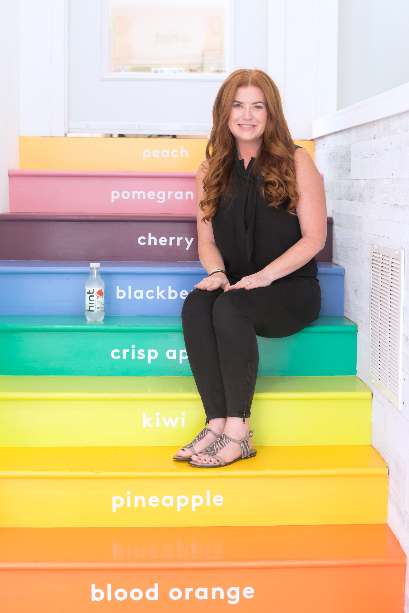

Kara Goldin
On building a $1 billion enterprise from ground zero at AOL to disrupting the beverage industry with Hint Water.

Photo: Kara Goldin, Hint Inc.
Entrepreneur Kara Goldin is the Founder and CEO of hint, Inc., a healthy lifestyle brand that produces the leading, award-winning, unsweetened flavored water, as well as a scented sunscreen spray that is oxybenzone and paraben-free.
Kara has received numerous accolades, including being been named EY Entrepreneur Of The Year 2017 Northern California, one of Fast Company’s Most Creative People in Business, Fortune’s Most Powerful Women Entrepreneurs and Forbes’ 40 Women to Watch Over 40. The Huffington Post listed her as one of six disruptors in business, alongside Steve Jobs and Mark Zuckerberg.
Previously, Kara was Vice President of Shopping and E-commerce Partnerships at AOL, where she helped lead the growth of its startup shopping business to a $1 billion enterprise.
Kara is an active business speaker and writer and, in 2016, she launched The Kara Network, a digital resource and mentoring platform for entrepreneurs. She also recently launched the podcast Unstoppable, where she interviews founders, entrepreneurs and disruptors across various industries.
Follow Kara on LinkedIn & Twitter @karagoldin. www.drinkhint.com www.thekaranetwork.com
Interview Q's ―
When was the time you made the switch to AOL?
Seven years into working at AOL, what did you think your next step was?
What then made you want to start a beverage company?
How did your experimentation lead to deciding to create a water brand?
How did you actually go about creating Hint’s first product?
What did you learn about these large beverage companies?
What was it like launching this new product?
How do you think your work has affected other companies and their product development?
Could you seek out advice from other people in the industry when you were developing Hint?
Kara Goldin has shown that being curious enables you to see beyond what's already been done and disrupt existing solutions that might not be what's best anymore.
Maya Frai: What did you envision yourself doing after college? I know that after graduating, you actually wanted to go into the magazine business.
Kara Goldin: When I graduated, I really thought I wanted to go and do something that was going to make a difference. I ended up moving out to New York and tried to get a job at Time Inc. magazine. At the time, the big names were Fortune, Sports Illustrated, and People, but I really wanted to work at Fortune. I thought Fortune was really making finance easy for people who didn't necessarily understand it. I actually ended up getting a job in circulation. I had no idea what it was, but I discovered circulation entails understanding what the customer does and how they respond to things such as subscriptions, which are really important to today’s direct to consumer and e-commerce businesses. It was kind of the best thing I did since I learned a lot about the facets of a CPG (Consumer Packaged Goods) brand. I then moved to a role at CNN working on ad sales to then ending up help start work in their airport channels.
MF: When was the time you made the switch to AOL?
KG: After CNN, I met my husband in New York. He was getting out of law school and wanted to get into technology law so both of us moved out to San Francisco. I was trying to figure out what I was going to do next, whether I was going to stay with CNN or try something else. I was reading about Steve Jobs over the years and found out there was this project inside of Apple that I had read about before which was doing cd-rom shopping. It was more visionary talk of how people would no longer just be shopping from catalogs and in stores but also online. This was in the mid-90s so I thought this was super cool. I picked up the phone and called the guys who worked for Steve. During the call, I learned that they were spinning out this company outside of Apple and had this other investor in their company, along with Apple, which was AOL. I ended up getting an offer from them to go out to retailers to get them to sign up to be a part of this project. Six months later, AOL acquired us. At this point, they wanted me to go out to retailers to get them involved with our project along with their service called America Online.
MF: Seven years into working at AOL, what did you think your next step was?
KG: I really had no idea what the job would end up being. By the time I left seven years later, I had a pretty big team and we were generating over a billion dollars in revenue for AOL. That was when I started thinking about whether or not I wanted to do it all over again in the technology industry or do something else. I was getting lots of calls from other companies like Yahoo and there were rumblings about this new company called Google. I thought that there were a lot of interesting things out there, but on a parallel path, I was starting to look at my own health. There wasn’t anything specifically concerning other than the fact that my skin started to develop adult acne, which was odd since I never had acne as a kid. I also noticed my energy levels were really low and I started to gain a lot of weight. At the time, I had three kids so I had sort of gained weight and then lost weight. After baby number three, I had gained over 50 pounds and really wanted to get rid of it. I remember having a conversation with my friend who couldn’t believe I was 50 pounds overweight and said to me “Oh my gosh, you wear your weight really well. It’s so evenly distributed.” I was like this is the most messed up conversation. I really had to start paying attention and get in shape while also trying to figure out what I wanted to do next.
MF: What then made you want to start a beverage company?
KG: I was shopping at Whole Foods and Trader Joe's and I really believed that I was doing the right thing in choosing healthy options. But I started to realize how confusing and hard it was to really understand what was inside products sold at these markets. There were all these things calling themselves “diet” or water-based products that weren’t even water at all. It was really tricking me into believing that things were healthier than they actually were. It wasn't that hard for me to get healthy from a food perspective but rather from a drinking perspective. I was always drinking a ton of diet soda and one day I started looking into it and realized there were so many ingredients in diet coke for instance that I didn’t really understand. So my response was to just throw it in the garbage just to see what happens when I switch to plain water. I was never a plain water drinker and found it super boring. But I wanted to experiment for a couple of weeks. So, I did it and ended up losing over 24 pounds in two and a half weeks. And in 6 months, I lost over 55 pounds, my skin cleared up, and I had way more energy. I thought it was so crazy how easy it was to just focus on that one part of my diet. Over time, I just started to slice fruit and throw it in the water just to get myself to drink water regularly.
MF: How did your experimentation lead to deciding to create a water brand?
KG: I knew I didn’t want to gain the weight back and my skin was still much clearer and I had higher energy. So at that point, I just really wanted to find a product that is entirely based on fruit and water. I started doing my own research on a lot of these flavored water drinks. I saw that they all had sugar or diet sweeteners in them as well as the fact that they weren't using fruit, they were using bone marrow. Or my personal favorite -- beaver anus glands. As well as using cockroach wings for water coloring. It was so surprising and scary to see what these products were actually made of. But, as I was discovering all of this, it also made me excited to learn more.
MF: What made you so excited to discover the ingredients behind these so-called “successful” water brands?
KG: I talk a lot about this from perspective. I was one of the youngest vice presidents at AOL and always liked taking on these types of tasks to climb up the ranks. At the end of the day, I was in the position where as you move up, you are sort of put in this position to be the smartest one in the room. You’re supposed to be teaching everyone else. So I was still ready to learn and really dive into new things. And what I saw in this industry, although it was scary, was excitement since I thought maybe this is something I could disrupt in some way. Since I couldn’t find the product in the market that checked all the boxes for me, I decided that since I was looking for a job in technology, I could just try developing this product and give it a try to see how it does in stores. And that was really how Hint started.
MF: How did you actually go about creating Hint’s first product?
KG: I made sure to eliminate the one thing that most other water-brands have: sugar. Hint doesn't have any sugar at all, not even a little bit of sugar or diet sweeteners like Stevia, which is probably the most common diet sweetener in the market. Everything I found in stores had diet sweeteners and the flavored waters weren’t using real fruit, instead using Splenda or NutraSweet. I would go to stores and tell them about my idea, but they kept pointing me to things like Vitamin Water and other flavored waters that had these sweeteners in it. I responded by telling them Hint was different because we’re really trying to avoid what these other flavored water companies were doing. What I didn’t realize at the time was that I was not only creating a new product, but an entirely new category of unsweetened flavored water. Although we also have carbonated waters, our main focus is the still water that we first started with. The consumers that are really excited about Hint really understand that our promise is no sweeteners.
MF: When you were first developing the product, you once mentioned that while on a call with a Coca-Cola executive, you felt unprepared and thought you couldn’t really take this idea off the ground since you didn’t have that much experience in developing something like this before. What changed in your mindset?
KG: I was looking for advice from this soda executive and learned that oftentimes, these large companies are really focused on defending what they’re doing right away. So in the case of the large soda companies, whether it’s Coke or Pepsi, they’re really trying to defend their position for sugar and sweeteners. So when talking to them about sweet-flavored water that is not sweet, the guy basically shot down the idea and said it wasn’t really what Americans are looking for. When I tell people about this, they ask me how did I even have the confidence to say that it’s just one guy’s opinion and do my own thing? And I don’t really know the answer to that other than that I know I’ve worked at large companies and what I’ve seen is that it is really just one person’s opinion. Just because somebody works inside of a large company and has a big title behind their name doesn’t mean they know entirely what’s best. You often have to look at it from their lens and decide for yourself if you’re buying what they’re trying to tell you. I’ve counseled entrepreneurs all the time and I’ve told them that when you’re selling somebody on an idea, you have to really pay attention to your own intuition as well. They could be the nicest or the most experienced people in the world working for the top companies. You have to be careful in taking their advice and comments because it might distract you from what you actually want to do.
MF: What did you learn about these large beverage companies?
KG: It’s so often that when you're working in large companies, especially CPG and big food companies, you realize they are opposed to products outside of their original product lines. I mean what we were doing was really hard since we didn’t have preservatives and we were using real fruit which was counter to what these other companies were doing. But in large companies, when they develop a product that seems to be working and growing, there’s no real need for innovation because sometimes they’ll just undo what they’ve been doing for years. They are focused on the sales flow of the original product. In the case of Coca-Cola, they might develop other products like diet soda which is maybe lower in calories, but it’s still sweet and goes to show how it’s really hard for them to create new products that are totally counter to what they've already formulated.
MF: You also launched Hint sunscreen. Although you’ve stated that the goal is not to have 5,000 products but to bring essentials to the market. So why sunscreen?
KG: Right. In the case of sunscreens, I noticed a pre-cancer spot on my nose and started to question what types of sunscreens were out there. I started looking at mineral-based and chemical-based sunscreens. I’d heard about parabens being not so great, but started to research a bit more into the other ingredients. I stumbled upon oxybenzone as an ingredient and saw that according to some people, it may actually encourage pre-cancer cell growth under the skin. So I thought do we really need oxybenzone in sunscreen? Going back to what large companies do, I saw that over 95% of sunscreen products in the market have oxybenzone in them. You can see how it’s tough to reformulate something especially since every time you reformulate it, you have to get FDA approval. If for example, L’Oreal were to create a product with no oxybenzone or parabens, they’ve created this concerned interest but still have a bunch of other products in their portfolio that have them. I recognized this and started to formulate this sunscreen with no oxybenzone or parabens in it. I then took the fruit that we're using in the drinks and thought maybe it'd be great to have a grapefruit sunscreen and so-on. I then got FDA approval and launched the product.
MF: What was it like launching this new product?
KG: I mean it’s been great and we launched online initially. We have a significant percentage of our businesses direct-to-consumer on our website as well as Amazon and so we were able to go out directly to our list of customers and we’ve had a really good success rate. We then took it to CVS and Target and they were super excited about the product and so they brought it in nationwide last year. That really showed us that we've developed a brand that people are super excited about. And we’ll look at other categories and have a few in the works that we plan to launch, but I also can’t say never to launching thousands of products. What we don’t need to do is launch thousands and thousands of products, but instead launch products that solve the right problems.
MF: How do you think your work has affected other companies and their product development?
KG: When looking at our company now, I think that we’re not just about helping the consumer figure out what could be done but we’re also showing what executives from these large sunscreen and soda companies can do as well. They have come to us and said you know you guys figured out how to do something like this. It’s just so hard for these companies to do this since they’ve got all those other products that go against what we’re doing. I think we can lead industries to actually do better and then customers will begin to start asking why brands aren’t creating products without oxybenzone or parabens. There’s definitely a lot of new brands that are more openly transparent about a lot of the ingredients they are putting into their products, particularly beauty products. Specifically for women, they are a lot of products that hurt women's health. Companies need to be more transparent about the production of these goods and everything in relation to that. But still, I see that there’s a lot more work to do. I look at so many products and think that it’s a little bit of a shell game. I mean it’s really tough to understand what these products are made of. Just look at the whole palm oil industry. We were just talking last night in the office about Justin’s peanut butter, where they use palm oil in most of their products and call themselves sustainable.
MF: Could you seek out advice from other people in the industry when you were developing Hint?
KG: A lot of people in the industry have actually just reached out to me directly or I met them through mutual friends. I've never been afraid to just have a conversation with people. When I first started Hint, it was a bit confusing for me because coming from tech, I felt like people were much more open to offering advice and being helpful. When I was at AOL, I knew people at Microsoft and Yahoo and it was really helpful and good competitive fun. When I got into launching this company, I remember going to the first trade show and trying to talk to people in the food industry, from both small and large companies, and they'd ask me to turn away from their booths. I would also talk to people who I’d met from Coke or Pepsi and they wouldn’t even really know each other. I realized it was just the kind of thing you’d see in this industry. So I remember thinking I could be the change and be the person that’s friendly. And through mentorship and public speaking, I’ve really tried to offer my best advice and lead on what I feel is right.
MF: How do you think that you've tried to support the women in your life and support the next generation of entrepreneurs?
KG: I have four kids and have two daughters, one in college and one is a senior in high school. I also have a junior in high school and an eighth grader. I think if you talk to them, they’d say that nothing's impossible. They have a mom that's a CEO and they have my husband, who is our Chief Operating Officer. And even though everyone says you can't be married and work together, we've been married for 23 years now. It's that sort of stuff that I think we’ve gone against conventional wisdom for them. For the other women who I have come across in my life, I have told them that you just have to set out goals for yourself and figure out how to achieve those goals. If they're not happening, then you either have to shelve the idea or give yourself more time to achieve them. It's really pretty simple and I help people break down their walls, whether they are my own kids or professionals. I'm also just a huge believer that anytime you're in a situation in receiving advice, you have to understand what and where that person is coming from. If you're interacting with somebody, whether they’re a job applicant or a senior executive you've got to have the mindset of treating it as a conversation and always be conscious of both sides. I’ve spoken on college campuses and in major corporations like American Express, Kaiser, Humana Health Care, and Caterpillar Tractors to talk about how the key thing to know is how to break down the walls and how to act differently and disrupt in order to keep moving the ball forward.